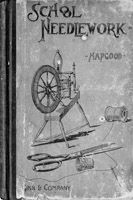

Pre-1900
1893
School Needlework, A Course of Study in Sewing designed for use in Schools
by Olive C. Hapgood, teacher of sewing in Boston Public Schools
Including general suggestions; plain sewing; ornamental stitches; and drafting, cutting, and making garments. A great book for learning basic stitches for hand sewing. (159 pages)
Go to Table of Contents (long) - Includes lesson titles
Go to Table of Contents (short)
Check the candidates' page to see what else will eventually be available.